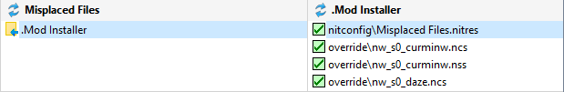
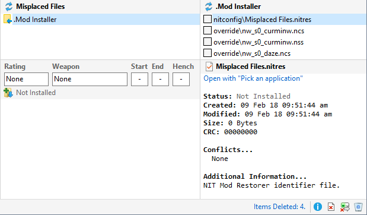
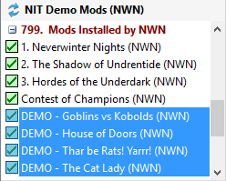

You can use Restorers to remove files from your Installation or User Files folder.
- Select the Restorer containing the files you want to remove.

- Click Uninstall from the Manage menu.

Uninstall Original Mods
Neverwinter Nights includes a number of Mods you may want to remove from Neverwinter Nights' Other Modules list.
- Select the Mods you want remove and click Uninstall from the Manage menu.

- The selected Neverwinter Nights demonstration Mods are removed from your installation and will not be shown in the Other Modules menu.
Related Topics
Create Restorers
Update Restorers
Create Character Restorers
Remove installed files
Create Original Restorers